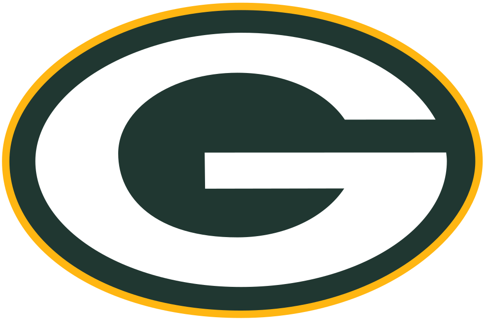

The Packers
One of the Greatest Teams in the Midwest
The Green Bay Packers are more than just a football team; they are a symbol of tradition, community, and resilience. As the third-oldest franchise in the NFL, the Packers have a rich history filled with unforgettable moments, from their dominance in the 1960s under Vince Lombardi to their recent Super Bowl victories. Known for their loyal fanbase and the unique ownership structure—where the team is publicly owned by fans—Green Bay's football culture stands apart from any other. With iconic players like Brett Favre, Aaron Rodgers, and Reggie White, the Packers have consistently been a force to be reckoned with in the NFL. Their legacy of success, commitment to excellence, and passionate supporters make them a true institution in American sports.